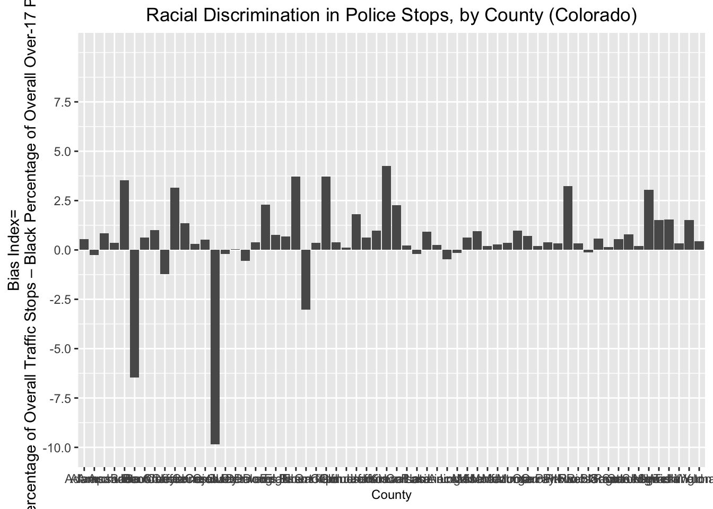

5 Defining an index of racial bias in traffic stops
Let’s briefly take stock of where we are. We started with a massive dataset (over 3,000,000 observations) of traffic patrol stops in the state of Colorado over the course of a decade. Over several steps, we have worked our way to a county-level dataset containing information on the total number of stops, and the number of those stops involving a Black motorist, over the course of the year 2010. That dataset looks something like this:
co_county_black_stops## # A tibble: 64 × 3
## # Rowwise: county_name
## county_name black_stops total_stops
## <chr> <int> <int>
## 1 Adams County 1208 34350
## 2 Alamosa County 43 4478
## 3 Arapahoe County 1819 17520
## 4 Archuleta County 28 5091
## 5 Baca County 61 1511
## 6 Bent County 46 1808
## 7 Boulder County 192 13053
## 8 Broomfield County 22 1095
## 9 Chaffee County 37 6521
## 10 Cheyenne County 38 1106
## # … with 54 more rowsNow, let’s think about how to use this information to develop a measure of the extent to which traffic police stops may have been driven by racial bias (whether conscious or unconscious) against Black motorists. We might expect that in a discrimination-free world, the share of traffic stops for a given racial group will reflect their share of the overall 17-and older population (we’ll consider the 17 and over population as our baseline, since that is the demographic eligible to drive). For example, if the Black percentage of a given county’s 17-and-over population is 5%, we could form a simple baseline expectation that in a discrimination-free world where “driving while Black” is not effectively criminalized, the percentage of traffic stops involving Black motorists would not exceed 5%. To the extent that the percentage of traffic stops involving Black motorists did exceed 5%, we might assume a statistical pattern consistent with racial discrimination.
Based on this logic, a simple county-level indicator of anti-Black bias in traffic stops would simply be the difference between the percentage of traffic stops in a given county involving Black motorists, and the percentage of the county’s overall population that is Black:
County-Level Traffic Stop Bias Index= (Percentage of County Traffic Stops Involving Black Motorists)-(Percentage of County’s 17-and-over Population that is Black)
As the value of this difference rises and we see higher values for the bias index, we might infer higher levels of possible discrimination in traffic stops.
Of course, this is a very simple index, and sets aside many complexities (for example, commuting patterns, among other things). However, despite its simplicity, the intuition behind the index is often used in the published social science literature on the topic; at least to a first approximation, therefore, this index will give us a meaningful way to identify counties in which the behavior of traffic patrol might merit greater public scrutiny, on account of disproportionately high stop-rates for the Black population.
Let’s create this index for Colorado counties in the year 2010. Note that we already have the data to compute the first part of the bias index (i.e. the percentage of traffic stops involving Black motorists); this is contained in co_county_black_stops:
co_county_black_stops## # A tibble: 64 × 3
## # Rowwise: county_name
## county_name black_stops total_stops
## <chr> <int> <int>
## 1 Adams County 1208 34350
## 2 Alamosa County 43 4478
## 3 Arapahoe County 1819 17520
## 4 Archuleta County 28 5091
## 5 Baca County 61 1511
## 6 Bent County 46 1808
## 7 Boulder County 192 13053
## 8 Broomfield County 22 1095
## 9 Chaffee County 37 6521
## 10 Cheyenne County 38 1106
## # … with 54 more rowsLet’s therefore turn to calculating the second part of the index: the percentage of each county’s population that is Black. We’ll carry out this calculation using demographic data from the 2010 decennial census.
5.1 Read in and join 2010 census data to co_county_black_stops
First, let’s read in the census dataset that was provided to you at the start of workshop using the read_csv function, and assign it to an object named co_counties_census_2010:
# Read in census data and assigns to object named "co_counties_census_2010"
co_counties_census_2010<-read_csv("co_county_decennial_census.csv")##
## ── Column specification ───────────────────────────────────────────────────────────────────────
## cols(
## GEOID = col_character(),
## County = col_character(),
## total_pop = col_double(),
## total_black_pop_over17 = col_double(),
## total_pop_over17 = col_double()
## )Let’s print the contents of this census dataset:
# Prints contents of "co_counties_census_2010"
co_counties_census_2010## # A tibble: 64 × 5
## GEOID County total_pop total_black_pop_over17 total_pop_over17
## <chr> <chr> <dbl> <dbl> <dbl>
## 1 08023 Costilla County 3524 18 2788
## 2 08025 Crowley County 5823 556 5034
## 3 08027 Custer County 4255 37 3525
## 4 08029 Delta County 30952 139 24101
## 5 08031 Denver County 600158 45338 471392
## 6 08035 Douglas County 285465 2447 198453
## 7 08033 Dolores County 2064 4 1602
## 8 08049 Grand County 14843 43 11825
## 9 08039 Elbert County 23086 122 17232
## 10 08041 El Paso County 622263 27280 459587
## # … with 54 more rowsNote that it contains county-level information on the overall population (i.e. all age groups and all racial categories), the 17+ population (for all racial groups), and the Black 17+ population. We can use the latter two variables to compute the second part of our bias index.
5.2 Join census data to co_county_black_stops
Before doing so, however, let’s join the census dataset we just viewed (co_counties_census_2010) to the dataset containing information on county-level police stops (co_county_black_stops); this will allow us to calculate the bias index using the information from the single dataset that results from this join.
The code below uses the full_join function to join co_counties_census_2010 (the second argument), to co_county_black_stops (the first argument), using the “county_name” column (from co_county_black_stops) and the “County” column (from co_counties_census_2010) as the join fields; it assigns the dataset which results from the join to a new object named co_counties_census_trafficstops:
# Joins "co_counties_census_2010" to "co_counties_black_stops" using the "county_name" and "County" fields as the join fields; assigns the product of the join to an object named "co_counties_census_trafficstops"
co_counties_census_trafficstops<-full_join(co_county_black_stops, co_counties_census_2010,
by=c("county_name"="County"))When we open co_counties_census_trafficstops, we should see information from both of the constituent datasets (co_county_black_stops and co_counties_census_2010):
# Prints contents of "co_counties_census_trafficstops"
co_counties_census_trafficstops## # A tibble: 64 × 7
## # Rowwise: county_name
## county_name black_stops total_stops GEOID total_pop total_black_pop_… total_pop_over17
## <chr> <int> <int> <chr> <dbl> <dbl> <dbl>
## 1 Adams County 1208 34350 08001 441603 9396 315480
## 2 Alamosa County 43 4478 08003 15445 142 11617
## 3 Arapahoe County 1819 17520 08005 572003 40558 424679
## 4 Archuleta County 28 5091 08007 12084 19 9676
## 5 Baca County 61 1511 08009 3788 15 2974
## 6 Bent County 46 1808 08011 6499 486 5403
## 7 Boulder County 192 13053 08013 294567 1961 231813
## 8 Broomfield County 22 1095 08014 55889 415 41237
## 9 Chaffee County 37 6521 08015 17809 264 14821
## 10 Cheyenne County 38 1106 08017 1836 4 1386
## # … with 54 more rows5.3 Define the variables that will be used in the bias index
Now that we have all the information in one dataset, let’s calculate the constituent parts of the bias index. The code below takes the current co_counties_census_trafficstops that we created above, and then uses the mutate function to create two new variables. The first variable, named “black_stop_pct”, is defined as the percentage of traffic stops that involved a Black motorist. The second variable, named “black_pop_pct”, is defined as the percentage of a given county’s 17+ population that is Black. The dataset that includes these two new variables is assigned back to co_counties_census_trafficstops:
# Takes "co_counties_census_trafficstops" and then creates two new variables; one new variable is named "black_stop_pct" (the Black percentage of traffic stops) and the other is "black_pop_pct" (the Black percentage of the over-17 population; assigns the updated dataset back to "co_counties_census_trafficstops"
co_counties_census_trafficstops<-
co_counties_census_trafficstops %>%
mutate(black_stop_pct=((black_stops/total_stops)*100),
black_pop_pct=((total_black_pop_over17/total_pop_over17)*100))Having created these two new variables (i.e. the components of the bias index we’ll calculate below) in co_counties_census_trafficstops, let’s view the contents below:
# Prints contents of "co_counties_census_trafficstops" object
co_counties_census_trafficstops## # A tibble: 64 × 9
## # Rowwise: county_name
## county_name black_stop_pct black_pop_pct black_stops total_stops GEOID total_pop
## <chr> <dbl> <dbl> <int> <int> <chr> <dbl>
## 1 Adams County 3.52 2.98 1208 34350 08001 441603
## 2 Alamosa County 0.960 1.22 43 4478 08003 15445
## 3 Arapahoe County 10.4 9.55 1819 17520 08005 572003
## 4 Archuleta County 0.550 0.196 28 5091 08007 12084
## 5 Baca County 4.04 0.504 61 1511 08009 3788
## 6 Bent County 2.54 9.00 46 1808 08011 6499
## 7 Boulder County 1.47 0.846 192 13053 08013 294567
## 8 Broomfield County 2.01 1.01 22 1095 08014 55889
## 9 Chaffee County 0.567 1.78 37 6521 08015 17809
## 10 Cheyenne County 3.44 0.289 38 1106 08017 1836
## # … with 54 more rows, and 2 more variables: total_black_pop_over17 <dbl>,
## # total_pop_over17 <dbl>5.4 Calculate the bias index
Now that we have the two components of the traffic stop bias index in co_counties_census_trafficstops (“black_stop_pct”, and “black_pop_pct”), all that is left for us to do is create a new variable, which we’ll call “bias_index”, that is calculated by taking the difference between “black_stop_pct” and “black_pop_pct.” The code below creates this new “bias_index” variable in co_counties_census_trafficstops, and assigns the dataset with this new variable back to co_counties_census_trafficstops:
# Creates new variable in "co_counties_census_trafficstops" named "bias_index" that is defined as the difference between the existing "black_stop_pct" and "black_pop_pct" variables
co_counties_census_trafficstops<-co_counties_census_trafficstops %>%
mutate(bias_index=black_stop_pct-black_pop_pct)Note that the “bias_index” variable is now in the dataset assigned to the co_counties_census_trafficstops object:
# prints contents of "co_counties_census_trafficstops"
co_counties_census_trafficstops## # A tibble: 64 × 10
## # Rowwise: county_name
## county_name bias_index black_stop_pct black_pop_pct black_stops total_stops GEOID total_pop
## <chr> <dbl> <dbl> <dbl> <int> <int> <chr> <dbl>
## 1 Adams County 0.538 3.52 2.98 1208 34350 08001 441603
## 2 Alamosa Cou… -0.262 0.960 1.22 43 4478 08003 15445
## 3 Arapahoe Co… 0.832 10.4 9.55 1819 17520 08005 572003
## 4 Archuleta C… 0.354 0.550 0.196 28 5091 08007 12084
## 5 Baca County 3.53 4.04 0.504 61 1511 08009 3788
## 6 Bent County -6.45 2.54 9.00 46 1808 08011 6499
## 7 Boulder Cou… 0.625 1.47 0.846 192 13053 08013 294567
## 8 Broomfield … 1.00 2.01 1.01 22 1095 08014 55889
## 9 Chaffee Cou… -1.21 0.567 1.78 37 6521 08015 17809
## 10 Cheyenne Co… 3.15 3.44 0.289 38 1106 08017 1836
## # … with 54 more rows, and 2 more variables: total_black_pop_over17 <dbl>,
## # total_pop_over17 <dbl>We can use this information to calculate an aggregated bias index for the state of Colorado as a whole in the year 2010:
# Calculates the total number of Black traffic stops in Colorado and assigns the value to an object named "colorado_total_black_stops"
colorado_total_black_stops<-sum(co_counties_census_trafficstops$black_stops, na.rm=T)
# Caclulates the total number of traffic stops in Colorado and assigns the value to an object named "colorado_total_stops"
colorado_total_stops<-sum(co_counties_census_trafficstops$total_stops, na.rm=T)
# Calculates the total 17+ Black population in CO and assigns the value to an object named "colorado_17plus_blackpopulation"
colorado_17plus_blackpopulation<-sum(co_counties_census_trafficstops$total_black_pop_over17, na.rm=T)
# Calculates the total 17+ population in CO and assigns the value to an object named "colorado_17_plus_overall"
colorado_17_plus_overall<-sum(sum(co_counties_census_trafficstops$total_pop_over17), na.rm=T)
# Calculates the percentage of CO traffic patrol stops and assigns the value to an object named "black_stop_pct_CO"
black_stop_pct_CO<-(colorado_total_black_stops/colorado_total_stops)*100
# Calculates the percentage of the Colorado 17+ population that is Black and assigns the value to an object named "black_over17_population_pct_CO"
black_over17_population_pct_CO<-(colorado_17plus_blackpopulation/colorado_17_plus_overall)*100
# Calculates the bias index for the state of Colorado as a whole, by computing the difference beween "black_stop_pct_CO" and "black_over17_population_pct_CO"; assigns the result to an object named "CO_bias_index"
CO_bias_index<-(black_stop_pct_CO)-(black_over17_population_pct_CO)Now, let’s print the value of CO_bias_index:
CO_bias_index## [1] -1.112616Interestingly, the value of the aggregate state-level bias index is negative; specifically, this result suggests that the Black share of traffic stops in Colorado is about 1.11 percentage points less than the Black share of Colorado’s 17+ population. At first glance, this might suggest that “driving while black” is not criminalized in Colorado ( during the year under consideration), according to our simple bias indicator. However, it might still be the case that there are specific areas in the state where racial bias in traffic stops is a problem, and focusing on an aggregated state-level measure of the bias index obscures possible micro-level variation in patterns of bias with respect to traffic stops. Documenting this micro-level variation is be an important task, since it would allow us to identify “problem areas” that might be excessively punitive towards Black drivers, and thereby target efforts at reform. The remainder of the lesson attempts to document this micro-geography of systemic bias in traffic stops.
5.5 Compute summary statistics for the bias index
Recall that we have a measure of the bias index for each county in Colorado; a simple way to document the spatial distribution in the bias index would be to simply compute some basic summary statistics for the “bias_index” variable in co_counties_census_trafficstops, which will give us a sense of how the bias index varies across counties. We can generate these summary statistics using the describe function.
Below, the argument to the describe function, which reads co_counties_census_trafficstops$bias_index simply specifies that we want summary statistics for the “bias_index” variable that is in the dataset assigned to the co_counties_census_trafficstops data object:
# Produces summary statistics for "bias_index" variable calculated above
describe(co_counties_census_trafficstops$bias_index)## vars n mean sd median trimmed mad min max range skew kurtosis se
## X1 1 62 0.53 2.04 0.47 0.65 0.59 -9.84 4.26 14.1 -2.45 10.67 0.26This table of summary statistics shows that the mean bias index across counties was 0.53 and the median value of the bias index was 0.47; this clearly suggests that even though the bias index for the state as a whole was negative, there are many counties with a positive bias index. In other words, many Colorado counties appear to have been stopping black motorists at disproportionately high rates. Moreover, there is a fairly large range in the bias index with respect to counties; the county with the largest value for “bias_index” had an index of 4.26 (i.e. the share of Black motorists stopped by the police was 4.26 percentage points higher than the share of Black county residents in the 17+ age demographic), while the county with the smallest value for the index had an index value of -9.84 (i.e. the share of Black motorists stopped by police was 9.84 percentage points lower than the share of Black county residents in the 17+ age demographic). These basic results suggest that a few outlier parts of the state where racial bias (as we are measuring it here) does not appear to be a problem are driving down the state’s overall bias index, despite the fact that in many areas of the state, Black motorists are subject to disproportionately aggressive policing. One way to quickly explore this possibility might be to create a quick visualization that conveys county-level variation in the bias index. In Section 5.6, we’ll visualize this county-level variation in the bias index on a simple graph.
5.6 Visualize county-level variation in the bias index using ggplot
There are many possible ways to visualize county-level variation in the “bias_index” variable. Here, we’ll make a simply bar graph using ggplot, a popular visualization package that is part of the tidyverse suite of packages.
Before making this graph, let’s quickly make a new column in co_counties_census_trafficstops, named “County”, that takes the information in the existing “county_name” field (which takes the form of “
The following code takes the dataset currently assigned to theco_counties_census_trafficstops object, and then uses the mutate function to create a new field named “County”, that is populated by taking the existing “county_name” column and using the str_remove function to remove the part of the “county_name” strings that read “County”. It then assigns the modified dataset back to the co_counties_census_trafficstops object, which overwrites the previous version of the dataset:
co_counties_census_trafficstops<-co_counties_census_trafficstops %>%
mutate(County=str_remove(county_name, " County"))Let’s confirm that the new “County” field has been successfully created:
co_counties_census_trafficstops## # A tibble: 64 × 11
## # Rowwise: county_name
## county_name County bias_index black_stop_pct black_pop_pct black_stops total_stops GEOID
## <chr> <chr> <dbl> <dbl> <dbl> <int> <int> <chr>
## 1 Adams County Adams 0.538 3.52 2.98 1208 34350 08001
## 2 Alamosa County Alamo… -0.262 0.960 1.22 43 4478 08003
## 3 Arapahoe County Arapa… 0.832 10.4 9.55 1819 17520 08005
## 4 Archuleta Coun… Archu… 0.354 0.550 0.196 28 5091 08007
## 5 Baca County Baca 3.53 4.04 0.504 61 1511 08009
## 6 Bent County Bent -6.45 2.54 9.00 46 1808 08011
## 7 Boulder County Bould… 0.625 1.47 0.846 192 13053 08013
## 8 Broomfield Cou… Broom… 1.00 2.01 1.01 22 1095 08014
## 9 Chaffee County Chaff… -1.21 0.567 1.78 37 6521 08015
## 10 Cheyenne County Cheye… 3.15 3.44 0.289 38 1106 08017
## # … with 54 more rows, and 3 more variables: total_pop <dbl>, total_black_pop_over17 <dbl>,
## # total_pop_over17 <dbl>Now, we’re ready to use ggplot to make our bar graph.
The following code takes co_counties_trafficstops, and then uses the drop_na function to remove counties for which the “bias_index” value has an “NA” value (there are two such counties), so that they do not show up on the graph. It then enters the ggplot environment by calling the ggplot function. It then uses the geom_col function to indicate that the desired output is a bar graph. Within the geom_col function, the expression that reads aes(x=County, y-bias_index) specifies which variables we want to represent on the graph, and how we want to represent those variables (i.e. which variable do we want on the x- axis, and which variable on the y-axis?). The instructions used to translate the variables in a tabular dataset into a visual representation are known as an “aesthetic mapping”, which is abbreviated within the grammar of ggplot to aes. After specifiying that we want a bar graph based on the co_counties_census_trafficstops object (with the “County” column mapped to the x-axis and the “bias_index” column mapped to the y-axis), we use the labs function (short for “labels”) to designate the graph’s main title, and the labels for x and y axis. The next few lines of code customize the appearance of the axes. In ggplot, the theme function is a versatile function that helps to customize the appearance of a ggplot object; here, we set the axis.title.x argument equal to element_text(size=9), which effectively sets the size of the x axis labels. In addition, we set the plot.title argument within the theme function equal to element_text(hjust=0.5), which effectively center-justifies the plot’s main title. Next, we use the scale_y_continuous function to set the interval breaks of the y-axis; this range defined as a vector passed to the breaks argument, where each numeric element of the vector denotes a desired interval break. The expand_limits function allows us to expand the range of either axis beyond the range established by the axis interval markers; here, by specifying y-c(-10,10) as an argument to the expand_limits function, we effectively stretch out the y-axis range from -10 to 10, even though the highest legend break is set at 7.5. Finally, we assign the plot that is created with this code to a new object named bias_graph:
bias_graph<-
co_counties_census_trafficstops %>%
drop_na(bias_index) %>%
ggplot()+
geom_col(aes(x=County, y=bias_index))+
labs(title="Racial Discrimination in Police Stops, by County (Colorado)", x="County", y="Bias Index=\nBlack Percentage of Overall Traffic Stops – Black Percentage of Overall Over-17 Population")+
theme(axis.title.x = element_text(size = 9), plot.title=element_text(hjust=0.5))+
scale_y_continuous(breaks=c(-10, -7.5, -5, -2.5, 0, 2.5, 5, 7.5))+
expand_limits(y=c(-10,10))Let’s print the contents of bias_graph and see what the plot looks like; it will appear in the “plots” tab on the bottom-right of your R Studio interface.
bias_graph
As we can see, the graph does show that certain counties have values around zero, or well below zero on the bias index, which drives down the overall value for the state; but in many other counties, the value of the “bias_index” variable is positive and substantively large. While the graph does convey valuable information, it’s a little bit confusing to look at; for example, the county names are squished together in a way that makes them unreadable.
A quick way to make the plot more readable is to invert the axes (such that counties are on the y-axis, and the bias index is arrayed along the x-axis). The code below is largely the same as the code in the previous code block. The differences are twofold, and contribute to a change in the map’s appearance. First, the argument to
geom_col looks a bit different. Instead of simply specifying (aes(x=County, y=bias_index), we instead specify (aes(x=reorder(County, bias_index), y=bias_index). The reorder function is essentially specifying that we want the x-axis variable (“County”), to be arrayed in descending order with respect to “bias_index”. Arraying the values in descending order makes for a graph that is easier to read. Second, we call the coord_flip() function, which inverts the axes such that the x-axis and y-axis (specified as arguments to geom_col) are inverted. We’ll assign this new plot to a new object named bias_graph_inverted:
bias_graph_inverted<-
co_counties_census_trafficstops %>%
drop_na(bias_index) %>%
ggplot()+
geom_col(aes(x=reorder(County, bias_index), y=bias_index))+
coord_flip()+
labs(title="Racial Discrimination in Police Stops, by County (Colorado)", x="County", y="Bias Index=\nBlack Percentage of Overall Traffic Stops – Black Percentage of Overall Over-17 Population")+
theme(axis.title.x = element_text(size = 9), plot.title=element_text(hjust=0.5))+
scale_y_continuous(breaks=c(-10, -7.5, -5, -2.5, 0, 2.5, 5, 7.5))+
expand_limits(y=c(-10,10))Let’s view the revised plot:
bias_graph_inverted
We can see that those relatively small changes produced a more readable and informative plot. We can get a clear sense of how the traffic stops bias index varies across Colorado counties, and identify the counties where policing practices appear the most punitive. The plot clearly conveys why focusing solely on aggregated statistics might be problematic: such measures have the potential to obscure more granular patterns of bias, such as those conveyed here, that should concern both policymakers and citizens.